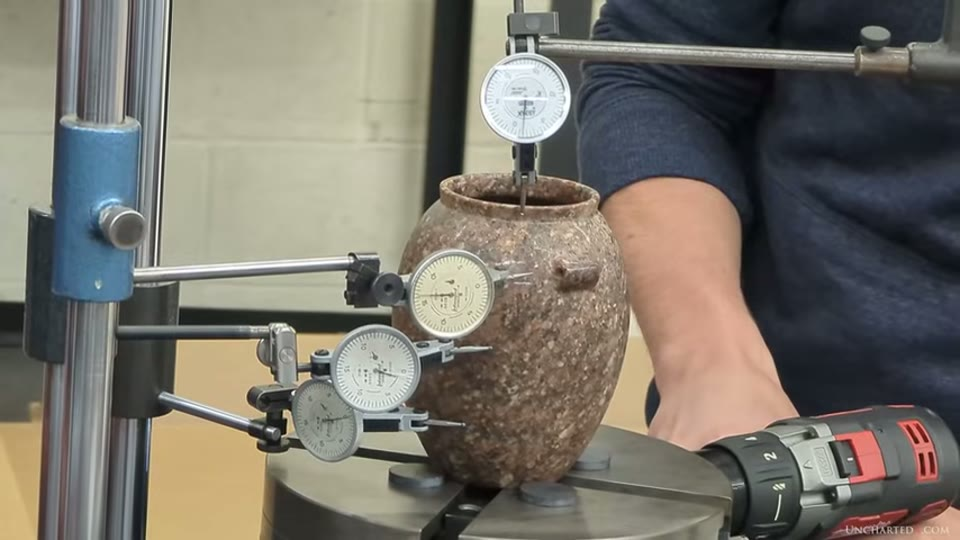
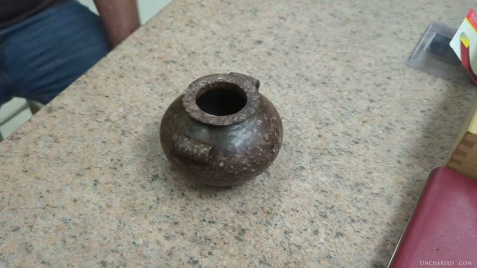
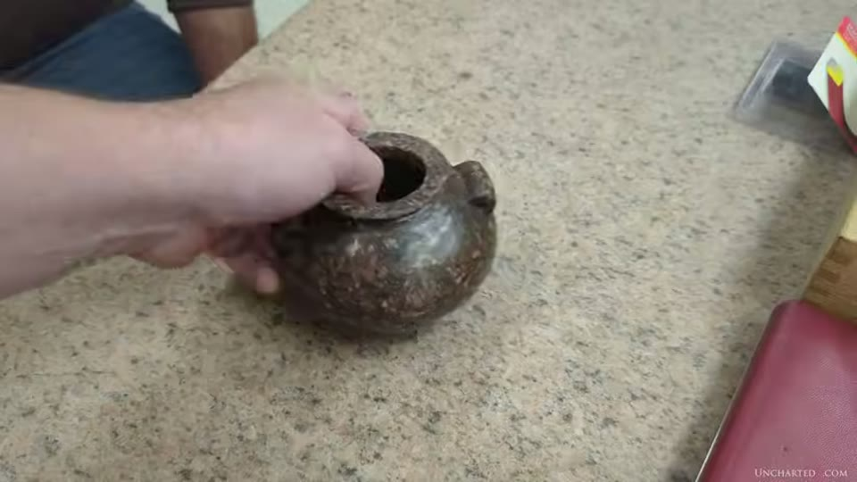
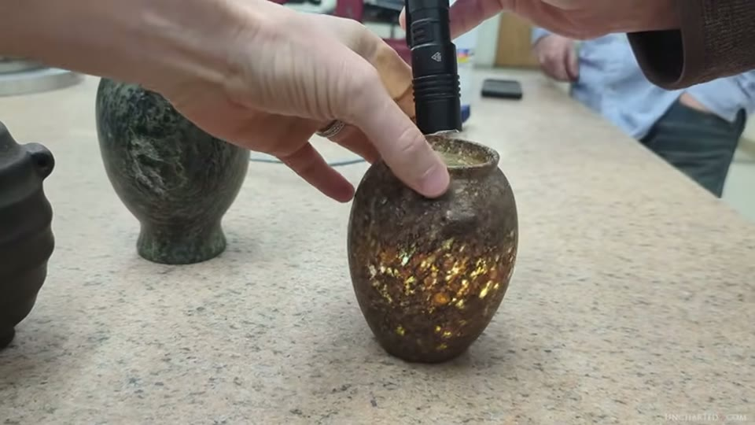
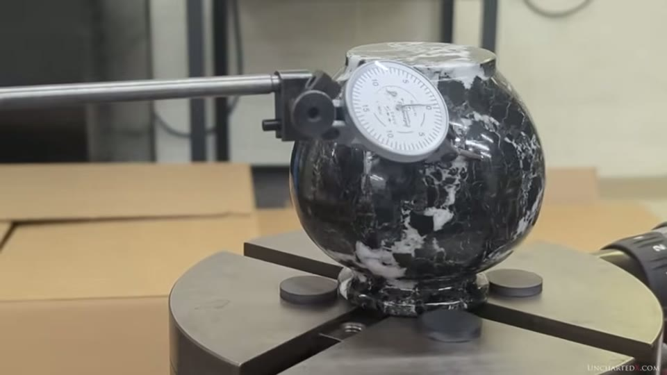
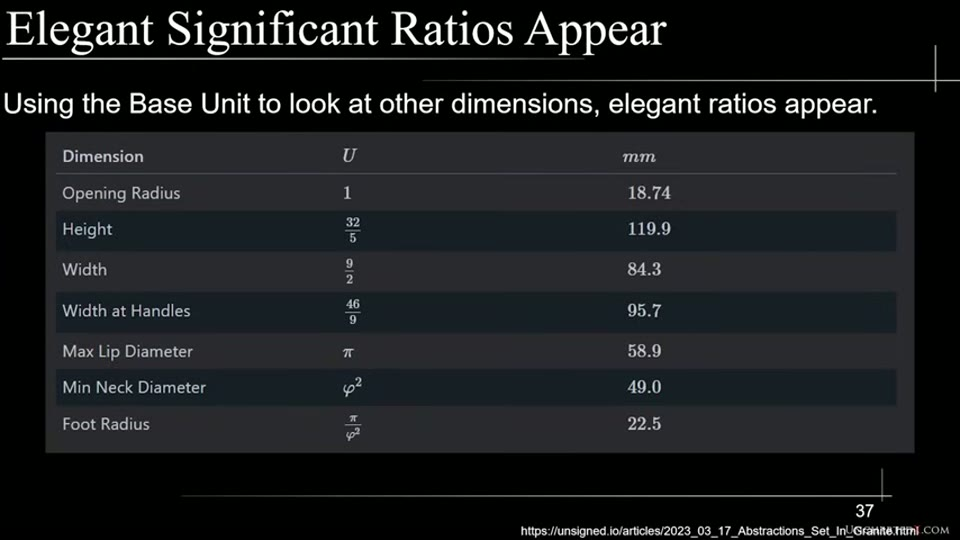

UnchartedX
Astonishing Results! More Ancient Egyptian Granite Vases Analyzed! More STL's available.
Ben · 68 min · watch on YouTube · summarised 2026-10-01
The third of the vase videos and the one with the most method in it. In October 2023 several vases were taken to Danville Metal Stamping in Illinois, a firm making precision parts for gas turbine engines, where Chris Dunn — who worked there for over twenty years — his son Alex Dunn and Nick Sierra measured them with dial indicators on a rotary table while Ben filmed 10:40–11:42. The previous two videos measured a scan; this one measures the objects.
It continues the vase scan update entry, and is itself summarised two years later in the vases entry, which reuses a thirteen-second clip from it — the demonstration of a human hair under a dial indicator. The whole project is examined from the other side in the vase-scan review entry.
Roughly half the runtime is scripted narration and half is footage of the inspection, with the engineers talking over their own gauges.
The instruments, and what they can and cannot do
11:42–15:42. This section is unusually careful, and the limits are stated by the people doing the work rather than extracted from them.
- The surface plate. Precision inspection starts with what the object sits on. The plate used was a slab of rose granite calibrated flat to less than a thousandth of an inch; Ben notes that A or AA grade plates reach 5 microns, about a fifth of a thousandth.
- The indicators. Dial indicators in height stands, each graduation half a thousandth (0.0005"), tips preloaded so they read movement in both directions.
- The ten-to-one rule, stated plainly: "You generally need a machine that's 10 times more accurate than what you're measuring, in order to know that what you're measuring is representative of the actual deviations and not introducing error due to its own accuracy limit."
- NIST is given as the ceiling: coordinate measuring machines inspecting to 0.2 of a micron, used for defining standards rather than for production.
- Modern engine tolerances for comparison: 20 thousandths for non-critical features, 3 to 15 for critical ones.

What everything else was measured against, and how good it is.
The plate's calibration certificate is on screen and legible, and it says which grade it is. The sticker reads Size 52 x 96, Serial # 3809, Calibrated Surface Flatness: 0.000950 Inches, Repeats Within: 0.000440, and under Federal Spec. GGG-P-463C (Quality Control Grade) the box ticked is B (Toolroom) — with AA (Laboratory) and A (Inspection) left empty beside it. It was calibrated 16 March 2023 and due 16 March 2024, so it was in date. The narration's figure of less than a thousandth matches the certificate; the sentence it is on screen for is the one about A and AA plates reaching five microns, and the grade of the plate in use is not spoken.
A second surface is involved and is not certified on camera: the hair and straight-edge demonstrations happen on this rose granite plate, while the vase inspections are said to take place on a black granite table carrying the rotary table 21:51–22:00.
And the limitation that matters most is volunteered on camera 23:41–25:07. The rotary table the vases were turned on has a runout of its own of about a thousandth of an inch, which the engineers establish during the session by indicating the table itself. Every figure below is read against a reference that is moving by about one thousandth.
Wall thickness was measured separately with dial thickness gauges at four points 90 degrees apart — "at least in the vases where the calipers can fit" 26:01–26:05.
The hair, and the straight edge
15:43–19:00. Two demonstrations of what a thousandth of an inch is, both using Ben's own hair.
In the first, an indicator is preloaded on the surface plate and a single hair laid under the tip: the needle moves about two thousandths. In the second, Chris Dunn lays his precision straight edge across the plate with a hair beneath it and the gap is lit from behind.

The instrument the figures are read from, and what turns the work.

What a thousandth of an inch looks like, with a hair for scale.
The workshop audio throughout carries burned-in subtitles, so the engineers' figures can be read as well as heard, and the dial faces are legible: the indicators are marked Interapid and .0005. The rotary table is turned by a cordless drill clamped to its gear drive.
The straight edge has a history, and Ben gives it 19:00–19:30: it is the same one Dunn took to the Serapeum of Saqqara in the 1990s, and in Lost Technologies of Ancient Egypt he reports being unable to see light beneath it anywhere on the inside walls of one of the boxes. The site is the Serapeum entry.
What follows is a concession, and it is made unprompted 19:30–20:40:
"I am aware that not all parts of all of the walls of all the boxes have this characteristic. In my now many visits to the Serapeum, I've had the chance to get in a number of the boxes. In some cases, the lower parts of some inside walls have visible variation, and some appear as yet unfinished, while others, at least to the eye, seem to have no deviation anywhere."
His reading of it is that boxes were being worked on site, so some may be unfinished, or that precision was applied where it was wanted and not elsewhere — the same intended-precision argument made about modern engine parts. He adds that he finds the "gotcha" use of such examples illogical, on the grounds that the surfaces that are precise still require explanation.
The vases, and their numbers
Readings are runout — the total sweep of the needle as the vase turns — not absolute dimensions.
The original granite vase 27:38–30:00. Figures called out on camera: 5 thousandths, 5, 2, and 1.5 at four positions. Across the lug handles the engineers find no reading they can distinguish — "the lug handles are dead nuts", with one calling 45 ten-thousandths. Ben notes any deviation there is within the thousandth of runout coming from the table itself. The area between the lug handles, which cannot have been turned, showed no significant deviation, which he reports as the physical inspection confirming the scan result from the previous entry.


How the measurements were actually taken.
The spinner vase 32:16–47:00, named for what it does: it balances on a tiny tip and spins on its axis for some time. The geometric reason given is that the bottom curvature is made of three circles of identical radius offset from one another, one protruding by a single millimetre to form the base. Measured runouts: 2, 4 and 3.5 thousandths on body and lug handles, about 5 between the handles, wall thickness varying by 2 thousandths, and around the neck a runout of about one thousandth — at which point the engineers audibly react. The finding is credited to a new researcher on the team named only as Stiny.


The object, and the behaviour its base geometry is offered to explain.
The thin-walled vase 48:23–56:00. Wall thickness from 4 mm down to 2 mm, thin enough at the centre that the stone is translucent and light shows the quartz inclusions. Petrie is cited for thinner pieces still, down to a fortieth of an inch. Runouts: single-digit thousandths on the body; about 10 thousandths on the lug handles, which Ben notes are "slightly offset on this vase and not exactly opposite to each other"; under 10 on the inside of the lip; and between the handles 8 to 10 in places with the majority 3 to 4. Wall thickness at the top measured with a micrometer gave deviations down to "1/10 of deviation, 90 millionths".

How thin the wall of the thinnest vessel is.
The beehive vase 56:41–57:16, black granite, not consistently curved, single-digit thousandths around the body. Ben records open speculation as to whether its shape is intended or whether the vessel is unfinished.
The vase that measured badly, and the control
Two results here are what separate this video from the two before it.
The red granite lotus vase 57:16–57:26 came in at 60 to 80 thousandths of an inch — an order of magnitude worse than everything else measured that day. Ben's comment on it is the broader concession:
"Not all hard stone vases are the same and certainly not all of them will show the level of precision that we've seen… there are lots of examples that are obviously not precision made and likely were made by dynastic Egyptians using the primitive handheld grinding methods shown by scenes on the walls found in places like Saqqara."
His objection is to the primitive method being "blanketed over everything that's classified as coming from this period", which is the two-industries argument.
The marble control 59:17–01:00:48. During the inspection the company's CEO, Judd Peck, went home and fetched a couple of modern marble vases for comparison — one made around the early 2000s on a precision computer-guided lathe. Measured on the same equipment, its outside surface gave a runout of about 5 thousandths, which Ben calls respectable and in line with expectation.
He states two things that qualify the comparison, both against his own case: the marble vase has no lug handles, so it was made without the tooling change that is central to the argument about the ancient pieces; and marble is far softer and more homogeneous than granite. The difference he draws out is the inside — the marble vase's interior is "only very roughly carved out", no effort having gone into thinning or machining it.

The modern CNC-made comparison piece, on the same equipment.
A table comparing all of it is put on screen and not one figure from it is spoken. It is headed WALL THICKNESS, all measurements in inches, with columns for caliper positions at 0, 90, 180 and 270 degrees and a Var column, and the editor has labelled four rows down the left side:
| vessel | 0° | 90° | 180° | 270° | Var |
|---|---|---|---|---|---|
| Red Granite Amphora Jar — OG vase | 0.353 | 0.354 | 0.352 | 0.354 | 0.002 |
| V03 — Spinner Vase | 0.280 | 0.278 | 0.279 | 0.278 | 0.002 |
| V05 — Thin Vase | 0.083 | 0.083 | 0.081 | 0.083 | 0.002 |
| V06 | 0.125 | 0.131 | 0.135 | 0.131 | 0.010 |
| V01 | 0.480 | 0.483 | 0.481 | 0.479 | 0.004 |
| Red Granite Lotus Vase | 0.125 | 0.124 | 0.120 | 0.122 | 0.005 |
| CONTROL Marble Vase | 0.476 | 0.492 | 0.501 | 0.490 | 0.025 |
It is held for about twenty seconds, from 01:00:35, while the narration moves on to provenance. Three things in it are not said anywhere in the video. The control's wall thickness varies by more than ten times the best three ancient figures. The lotus vase — the one called an order of magnitude less precise — varies by 0.005, better than V06 and better than the control; its poor result was runout, which is a different measurement. And V06 and V01 appear here with numbers and are never mentioned, which puts at least six vessels in the inspection set rather than the four discussed.

Every wall-thickness result of the day, including the control.
The mathematics
32:36–44:14. This is reported rather than demonstrated, and is credited to the cryptographer Mark Qvist of unsigned.io for the original vase, with the newer work by Stiny.
The radial traversal pattern. A function generating a family of circle radii in fixed ratio to one another, which Ben states in words as "the square root of 6 over 2 to the power of N" — a phrase that can be read two ways. The slide settles it, printing R(n) = (√6⁄2)ⁿ: the whole fraction raised to n.

The function the design claim rests on, as printed.
The claim is that the original vase's curvatures — from 1 mm radii up to 4 or 5 cm — almost all fit it, and that the same pattern now appears on the spinner vase. Taking the radius of the spinner's opening as the base, he says most of its curvatures match.
Ratios to π and φ, given with errors both as percentages and as distances on the object:
- lip radius over neck radius = π/φ², error ~0.59%, about 0.19 mm
- lug handle diameter over opening radius = π·φ, within 0.1%, about 0.1 mm
- outer curve diameter over body radius = φ², margin 0.28
- body curvature diameter over neck radius = π/φ, within 0.01%, about 0.006 mm
The base unit 40:01–44:03. Taking the radius of the internal opening as 1, the lip diameter is π units, the neck diameter φ² units and the foot radius π/φ² units. That unit measures about 18.739 mm, and Ben states it is the same within two microns as the wavelength of a 16 GHz electromagnetic wave in vacuum — the speed of light divided by 16 GHz.


The base unit, the constant it is set against, and the ratios drawn from it.
The slide prints both numbers, 1 U ≈ 18.739 mm and c/f = 299,792,458 / 16,000,000,000 = 18.737028625 mm, so the gap can be read off it directly. The next slide carries a table the narration reads only half of: beside the lip diameter at π units, the neck at φ² and the foot radius at π/φ², it gives the vase's height as 32⁄5 units, its width as 9⁄2, and its width at the handles as 46⁄9 — three plain fractions, none of them spoken. All of the slides in this sequence are numbered (30, 36, 37) and footed with the source article's URL, unsigned.io/articles/2023_03_17_Abstractions_Set_In_Granite.html.
The same figure is carried in the vases entry, where the slide behind it also carries Qvist's own warning — that dimensional deviations of 20 to 32 µm were observed in the measurements the number was derived from, and that he does not recommend using it as a reference outside the article. The gap being called a match is 2.07 µm. That caveat does not appear in this video.
Ben notes that not all features fit the function, on this vase or the original, and says the ones that do not were shown to have ratios connected to π, φ, or the base measurement.
Provenance, and what is claimed for it
59:50–01:04:10 and the opening 02:25–04:44. The charge being answered is that the vases are modern fakes.
- Several pieces in the collection trace to the 1800s; two rose granite vessels classified as predynastic trace to the 1960s, acquired then by the antiquities dealer Fayez Barakat, described as the fifth-generation owner of a well-known establishment, which Ben places in Israel.
- One vase is reported as brought out of Egypt by the Czechoslovakian ambassador in the late 1800s, from a predynastic burial whose carbon dating the speaker gives as "maybe like 9,000 BC. Not exactly, but that kind".
- The original vase's history runs back to the 1980s.
His argument against the fake claim is economic rather than documentary: micro-machining granite to single-digit thousandths with elaborate geometric design would require the best modern machines, would cost more than the antiquities market would return, and would have had to be done in the 1960s or 1980s in anticipation of scanning technology that did not then exist.
And the dating argument he rests on is an absence 01:02:44–01:03:30: precision stone vessels turn up in predynastic burials, and "there is literally zero evidence for any other form of advanced stonework happening in those periods". His explanation remains inheritance — that they were out of place even in predynastic times — and he notes this is the accepted account for Djoser's collection beneath the Step Pyramid, which is acknowledged as inherited heirlooms rather than made for him.
The predynastic range as he gives it is wide: from a few hundred years before 3150 BC to 10,000 or more years before, with Toshka at 14,000 years cited as the outlier.
What is coming, and what is set aside
01:04:15–01:06:18. More than ten vases had been scanned at that point with structured light and CT X-ray — the latter producing point clouds of billions of points and files of gigabytes. Several more were awaiting scanning, including, he notes, the very vessel a critic of the project had pointed to as a "real vase": a granodiorite shouldered vessel attributed to the early dynastic period.
He also sets a set of results aside, and says why 01:04:57–01:05:50. Precision reports had been completed on the scanned vases, but using a different method: instead of building a coordinate system from the vase's own features, tangent curves were drawn between points to generate a "perfect surface" for the real surface to be measured against. He says that method returns remarkable numbers — single-digit thousandths and in places zero — but that the team would rather hold to one procedure, so those results are not used here.
STL files for several more of the vases are published on his website.
What you can check yourself
- The scans are downloadable. More vases were released as STL files at the time of this video, so the geometric claims can be tested by anyone against the published models.
- The ratios are arithmetic. π/φ², π·φ, the radial traversal function and the base unit can be recomputed from the stated dimensions; so can the 16 GHz figure, which is simply 299,792,458 divided by 16,000,000,000.
- The hair demonstration repeats. A dial indicator, a surface plate and a hair is an experiment anyone with access to a workshop can run.
- Dunn's straight-edge claim is in print. The Serapeum result is in Lost Technologies of Ancient Egypt, and the passage can be compared with what is said here.
- The lotus vase result stands as the counter-example in the video's own data — 60 to 80 thousandths, against single digits for the rose granite pieces.
- Barakat is a named dealer and the Czechoslovakian ambassador's vase has a stated route out of Egypt; both are claims that archives could test.
- Alabaster vessels are in museums everywhere, and the claim that they are visibly out of round and unbalanced is one a visitor can check by eye, which is what Ben says to do.
What the video does not settle
- The reference surface moves. The rotary table's own runout is about a thousandth of an inch, stated on camera. Readings of 1, 1.5 and 2 thousandths are at or near that figure, and no correction for it is applied to any number reported.
- The readings are called out by eye from a moving needle. They are spoken during the sweep — "I watched it like a hawk", "D was tough cuz it came off and on so quick" — not logged by instrument. A printed inspection sheet with a tolerance table and a dimensioned outline of a vase lies on the bench in one shot, but it is never shown to camera or read from, and nothing on it is legible at this resolution.
- The wall-thickness table is the only collected set of numbers in the video, and it is silent. No comparable table is shown for the runout figures, which exist only as called-out numbers in the footage.
- Several figures are given only in the footage and never collected into a table on screen, so what was measured on which vase at which position has to be assembled from the talk.
- Spikes in the dial are explained after the fact. Sudden jumps of three to five thousandths are attributed to either damage or a quartz inclusion torn out during manufacture. Neither is verified at the point of measurement.
- Some vases could not be measured at all. A few could not be centred because of damage, and one or two show signs of having been glued back together.
- The control is one vase, and an imperfect match. Modern, marble, no lug handles, softer and more homogeneous stone, fetched from a private home. It establishes what one CNC-turned marble vase measures, not what modern machining can do in granite — and no modern granite piece is measured anywhere in the video. Its interior was not machined, which the video notes, so the wall thickness figure compares a finished inside against an unfinished one.
- The plate's grade is on screen and not in the narration. The certificate shows Grade B (Toolroom); the A and AA grades mentioned as reaching five microns are a different class of plate, and no certificate is shown for the black granite table the vases were turned on.
- The spinning demonstration is done on an ordinary countertop, not on the calibrated plate.
- The material comparison is withdrawn as it is made. Rose granite pieces measured best and diorite and corundum-bearing pieces less well, and Ben says plainly that the sample is too small to conclude anything from that.
- The base unit's margin is not given here. The 16 GHz coincidence is stated as a match within two microns, without the measurement uncertainty that the author of the analysis attaches to the number.
- The mathematics is reported, not shown being done. The ratios, the fitted circles and the tables are presented as findings from Qvist and from a researcher identified only as Stiny; no working is demonstrated and the choice of which features to measure is not discussed.
- A second set of precision reports exists and is not used. Results from the tangent-curve method are described as showing single-digit thousandths and in places zero, and are set aside on procedural grounds without being shown.
- Provenance is reported, not documented. No acquisition record, export paper or museum register appears on screen for any vase, and the "9,000 BC" carbon date is given conversationally and immediately qualified by the speaker.
- The fake argument is about cost, not evidence. It establishes that faking would be expensive and pointless, which is not the same as establishing age; no dating method is applied to any vase in this video.
- The Imhotep-and-alabaster account is restated as the origin of the imitation industry with no text, inscription or dated object cited for it.